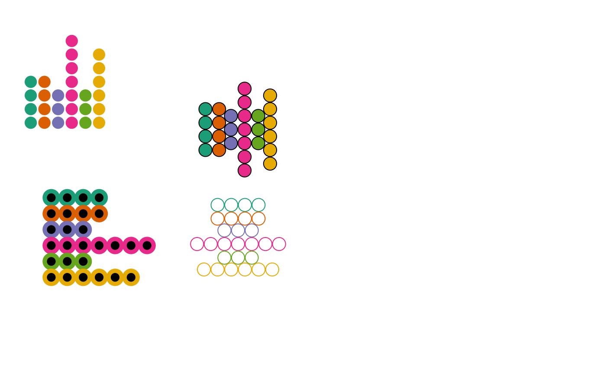

Uses Grid graphics to draw a dot profile glyph
(Chambers et al. 1983; DuToit et al. 1986)
.
dotglyphGrob(
x = 0.5,
y = 0.5,
z,
radius = 1,
col = "black",
fill = NA,
lwd = 1,
alpha = 1,
mirror = FALSE,
flip.axes = FALSE
)A numeric vector or unit object specifying x-locations.
A numeric vector or unit object specifying y-locations.
A numeric vector specifying the values to be plotted as dimensions of the dot glyph (number of stacked dots).
The radius of the glyphs.
The line colour.
The fill colour.
The line width.
The alpha transparency value.
logical. If TRUE, mirror profile is plotted.
logical. If TRUE, axes are flipped.
A grob object.
Chambers JM, Cleveland WS, Kleiner B, Tukey PA (1983).
Graphical Methods for Data Analysis.
Chapman and Hall/CRC, Boca Raton.
ISBN 978-1-351-07230-4.
DuToit SHC, Steyn AGW, Stumpf RH (1986).
Graphical Exploratory Data Analysis, Springer Texts in Statistics.
Springer-Verlag, New York.
ISBN 978-1-4612-9371-2.
Other grobs:
metroglyphGrob(),
pieglyphGrob(),
profileglyphGrob(),
starglyphGrob(),
tileglyphGrob()
dg1 <- dotglyphGrob(x = 150, y = 300,
z = c(4, 3.5, 2.7, 6.8, 3.4, 5.7),
radius = 2)
dg2 <- dotglyphGrob(x = 550, y = 300,
z = c(4, 3.5, 2.7, 6.8, 3.4, 5.7),
radius = 2, mirror = TRUE)
dg3 <- dotglyphGrob(x = 100, y = 550,
z = c(4, 3.5, 2.7, 6.8, 3.4, 5.7),
radius = 2, flip.axes = TRUE)
dg4 <- dotglyphGrob(x = 550, y = 550,
z = c(4, 3.5, 2.7, 6.8, 3.4, 5.7),
radius = 2, mirror = TRUE,
flip.axes = TRUE)
grid::grid.newpage()
grid::grid.draw(dg1)
grid::grid.draw(dg2)
grid::grid.draw(dg3)
grid::grid.draw(dg4)
dg1 <- dotglyphGrob(x = 150, y = 300,
z = c(4, 3.5, 2.7, 6.8, 3.4, 5.7),
radius = 2, fill = "black", col = "white")
dg2 <- dotglyphGrob(x = 550, y = 300,
z = c(4, 3.5, 2.7, 6.8, 3.4, 5.7),
radius = 2, mirror = TRUE,
fill = "salmon", col = "black")
dg3 <- dotglyphGrob(x = 100, y = 550,
z = c(4, 3.5, 2.7, 6.8, 3.4, 5.7),
radius = 2, flip.axes = TRUE,
fill = "cyan", col = "grey")
dg4 <- dotglyphGrob(x = 550, y = 550,
z = c(4, 3.5, 2.7, 6.8, 3.4, 5.7),
radius = 2, mirror = TRUE,
flip.axes = TRUE,
fill = "green", col = "grey")
grid::grid.newpage()
grid::grid.draw(dg1)
grid::grid.draw(dg2)
grid::grid.draw(dg3)
grid::grid.draw(dg4)
clrs <- mapply(function(a, b) rep(a, b),
RColorBrewer::brewer.pal(6, "Dark2"),
round(c(4, 3.5, 2.7, 6.8, 3.4, 5.7)))
clrs <- unlist(clrs)
dg1 <- dotglyphGrob(x = 150, y = 300,
z = c(4, 3.5, 2.7, 6.8, 3.4, 5.7),
radius = 2, fill = clrs, col = "white")
dg2 <- dotglyphGrob(x = 550, y = 300,
z = c(4, 3.5, 2.7, 6.8, 3.4, 5.7),
radius = 2, mirror = TRUE,
fill = clrs, col = "black")
dg3 <- dotglyphGrob(x = 100, y = 550,
z = c(4, 3.5, 2.7, 6.8, 3.4, 5.7),
radius = 2, flip.axes = TRUE,
fill = "black", col = clrs, lwd = 5)
dg4 <- dotglyphGrob(x = 550, y = 550,
z = c(4, 3.5, 2.7, 6.8, 3.4, 5.7),
radius = 2, mirror = TRUE,
flip.axes = TRUE,
col = clrs)
grid::grid.newpage()
grid::grid.draw(dg1)
grid::grid.draw(dg2)
grid::grid.draw(dg3)
grid::grid.draw(dg4)
